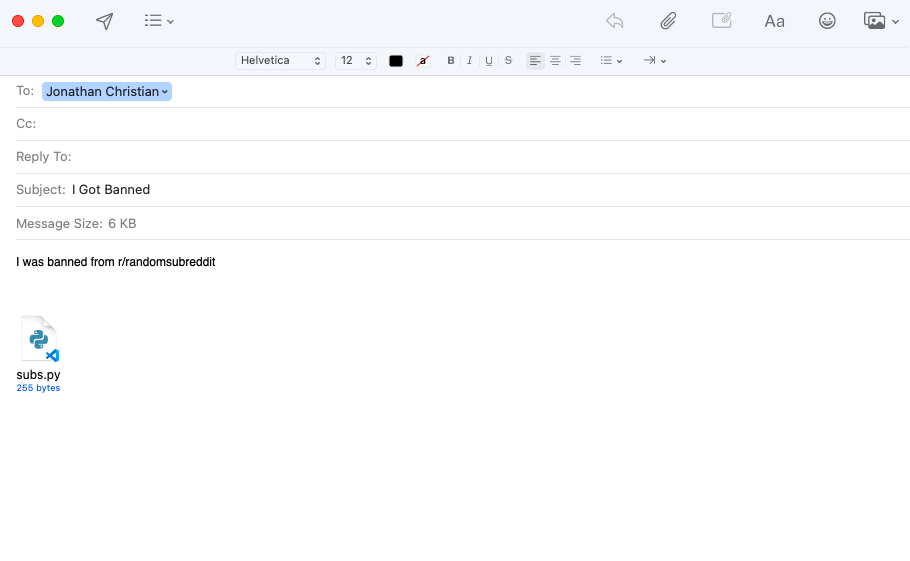

- Open up your email
- Start a new email draft
- Put our email address into the 'To:' field.
- Put "I Got Banned" in the subject field.
- Write in the email what sub you got banned from. Write something simple like "I was banned from r/thissubreddit"
- Double click the blue OnlyPost folder on your desktop to open it and see the files inside.
- Drag and drop the file titled "subs.py" into the bottom of the email you have open and are about to send us.
- Send the email and we will get back to you with a new subs.py file within 48 hours.

- Open up the blue OnlyPost folder on your desktop.
- Drag the subs.py file that is currently in your OnlyPost folder and drop it into the trash.
- Drag the new subs.py file at the bottom of the email we sent you onto your desktop.
- Drag the new sub.py file that is now on your desktop and drop it in the blue OnlyPost folder.
- Thats it! You're all done and you can resume using OnlyPost to post to Reddit.